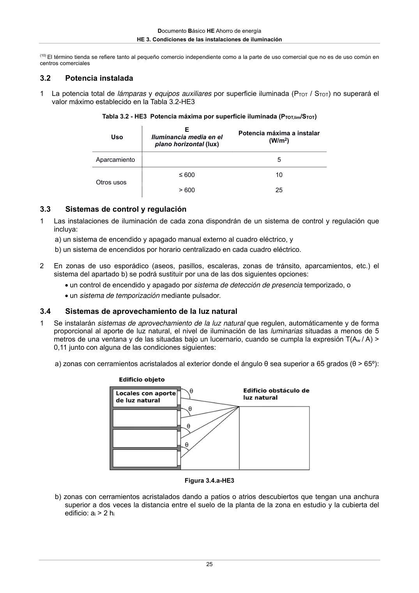

DB-HE Ahorro de energía · edición 2022-06-14 · capa oficial
Documento DB-HE-oficial · SHA-256 del PDF 7f890bd495552e979f83f72c5f5c7b642e745911a8e343a7b5b73023ce0e1f05
Página física 25 de 56.
Copia fiel del PDF fuente · Fuente oficial
Ficha de la disposición en la fuente oficial
Formato: Texto de la página (Markdown)
Documento Básico HE Ahorro de energía HE 3. Condiciones de las instalaciones de iluminación 25 (10) El término tienda se refiere tanto al pequeño comercio independiente como a la parte de uso comercial que no es de uso común en centros comerciales 3.2 Potencia instalada 1 La potencia total de lámparas y equipos auxiliares por superficie iluminada (PTOT / STOT) no superará el valor máximo establecido en la Tabla 3.2-HE3 Tabla 3.2 - HE3 Potencia máxima por superficie iluminada (PTOT,lim/STOT) Uso E Iluminancia media en el plano horizontal (lux) Potencia máxima a instalar (W/m2) Aparcamiento 5 Otros usos ≤ 600 10 > 600 25 3.3 Sistemas de control y regulación 1 Las instalaciones de iluminación de cada zona dispondrán de un sistema de control y regulación que incluya: a) un sistema de encendido y apagado manual externo al cuadro eléctrico, y b) un sistema de encendidos por horario centralizado en cada cuadro eléctrico. 2 En zonas de uso esporádico (aseos, pasillos, escaleras, zonas de tránsito, aparcamientos, etc.) el sistema del apartado b) se podrá sustituir por una de las dos siguientes opciones: un control de encendido y apagado por sistema de detección de presencia temporizado, o un sistema de temporización mediante pulsador. 3.4 Sistemas de aprovechamiento de la luz natural 1 Se instalarán sistemas de aprovechamiento de la luz natural que regulen, automáticamente y de forma proporcional al aporte de luz natural, el nivel de iluminación de las luminarias situadas a menos de 5 metros de una ventana y de las situadas bajo un lucernario, cuando se cumpla la expresión T(Aw / A) > 0,11 junto con alguna de las condiciones siguientes: a) zonas con cerramientos acristalados al exterior donde el ángulo θ sea superior a 65 grados (θ > 65º): Figura 3.4.a-HE3 b) zonas con cerramientos acristalados dando a patios o atrios descubiertos que tengan una anchura superior a dos veces la distancia entre el suelo de la planta de la zona en estudio y la cubierta del edificio: ai > 2 hi

Datos candidatos: compruebe celdas y notas en el PDF.